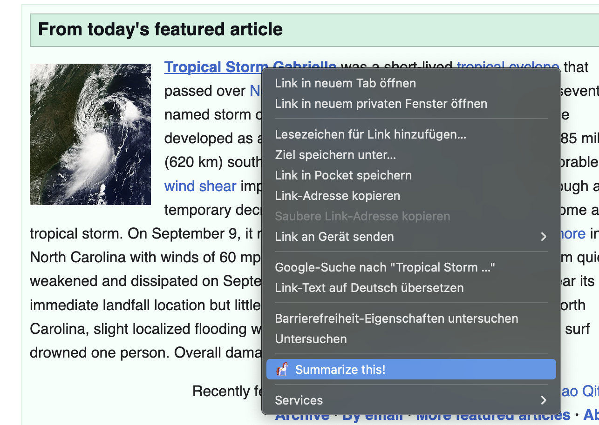
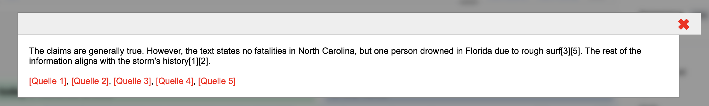

Das Internet ist voll von Fake News und Clickbait, was es schwierig macht, vertrauenswürdige Informationen zu finden. PoneyHot hilft Ihnen, den Lärm zu durchbrechen, indem es Inhalte zusammenfasst und Behauptungen überprüft—schnell und einfach.
Was ist PoneyHot?
PoneyHot ist ein Tool, das Ihnen hilft, direkt zu den Fakten zu kommen. Egal, ob Sie Online-Artikel durchsuchen oder virale Behauptungen überprüfen, PoneyHot macht es mühelos, Fakten von Fiktion zu trennen.
Es funktioniert auf zwei einfache Arten:
- Zusammenfassung: Fasst Artikel schnell zusammen, sodass Sie keine Zeit mit unnötigem Ballast verschwenden.
- Faktenprüfung: Überprüft Behauptungen sofort, sodass Sie Fehlinformationen erkennen können.
Wie benutzt man PoneyHot?
Firefox-Erweiterung
- Artikel zusammenfassen: Klicken Sie mit der rechten Maustaste auf einen Link und wählen Sie “Zusammenfassen”—PoneyHot erstellt eine kurze, klare Zusammenfassung.

- Behauptungen überprüfen: Markieren Sie eine Aussage, klicken Sie mit der rechten Maustaste und wählen Sie “Fakten prüfen”, um sie sofort zu überprüfen.

Telegram-Bot
- Senden Sie dem Bot eine URL, und er gibt eine Zusammenfassung zurück.
- Präfixen Sie eine Nachricht mit
???für eine Faktenprüfung oder!!!für eine Zusammenfassung. - Teilen Sie Links direkt von Ihrem Mobilgerät für eine sofortige Analyse.
Warum PoneyHot verwenden?
- Zeit sparen: Überspringen Sie lange Artikel und kommen Sie direkt zu den wichtigsten Punkten.
- Clickbait vermeiden: Erfahren Sie, worum es in einem Artikel wirklich geht, bevor Sie klicken.
- Informationen überprüfen: Fallen Sie nicht auf Fake News herein—überprüfen Sie sie mühelos.
Übernehmen Sie die Kontrolle über Ihr Online-Erlebnis
PoneyHot hilft Ihnen, informiert zu bleiben, ohne den Lärm. Egal, ob Sie Nachrichten lesen, Themen recherchieren oder Behauptungen überprüfen, PoneyHot sorgt dafür, dass Sie klare, zuverlässige und überprüfte Informationen schnell erhalten.
Probieren Sie PoneyHot noch heute aus und surfen Sie mit Vertrauen!
📌 Folgen Sie uns für Updates und tragen Sie auf GitHub bei: github.com/nickyreinert/poneyHot